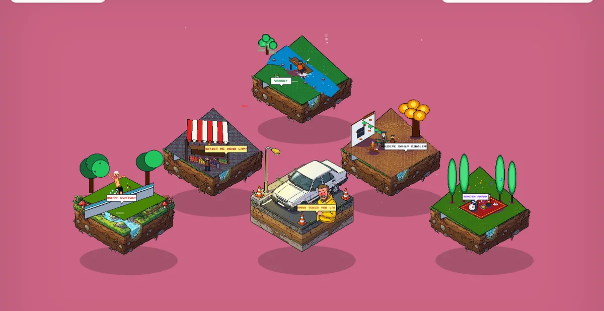
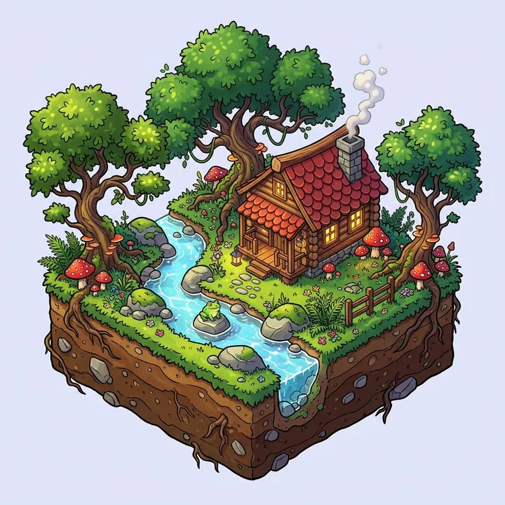
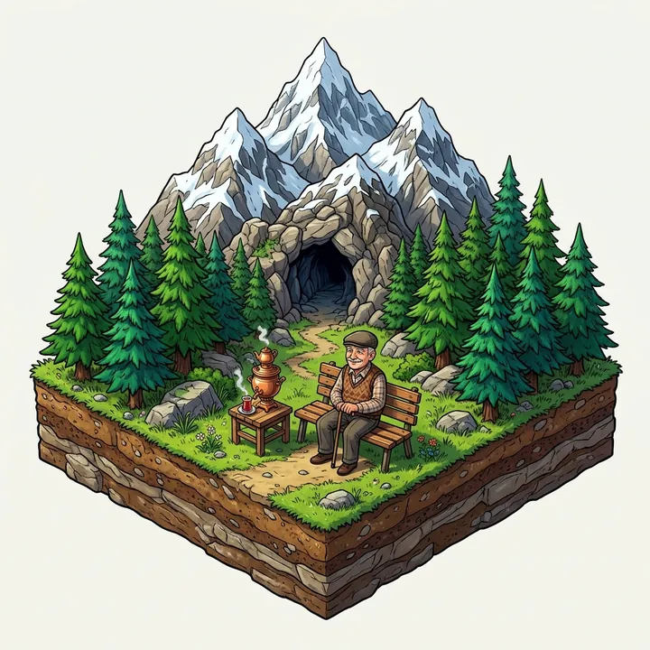
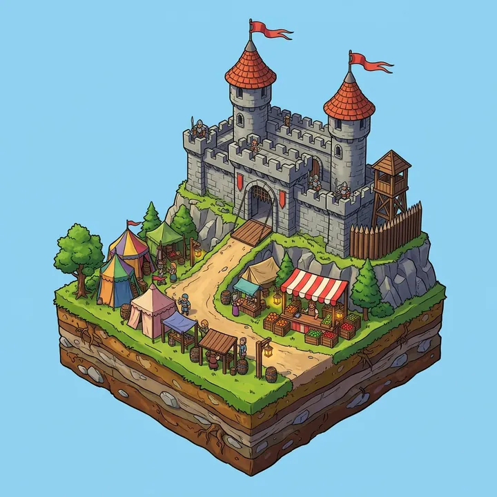

WEB · YAŞAYAN DÜNYA
Hoşgeldiniz Efendim
Kült videoların izometrik takımadası
Türkiye'nin kült viral videoları bir listede değil, minyatür adalarda yaşıyor. Her ada bir videonun dünyası: derede kurbağa vaaklıyor, pazarda tente sallanıyor, dağ evinde semaver tütüyor. Bir adaya dokun, video açılsın.
Yayında. Masaüstü ve telefondan tarayıcıyla gezilebilir; kurulum gerekmez.
01 · TAKIMADA
Video listesi yerine bir harita

- Sürükle ve yakınlaştır. Harita fareyle, dokunmatikte iki parmakla gezilir.
- Bir adaya dokun. Videosu tek bir oynatıcıda açılır; kapattığında ses de hemen durur.
- Ada dosyasını aç. Unutulmaz replik, "neden burada?" notu ve etiketler aynı yerde.
- Rehberli tura çık. İlk Adımlar, Gece Klasikleri, Müzik ve Meydan gibi küratör koleksiyonlarıyla gez.
02 · DİORAMALAR
Her ada kendi küçük dünyası
Adalar düz kart değil; toprak katmanları, sarkan çimleri ve kendi gölgesi olan minyatür bloklar. Üstlerinde düşük kare hızında küçük hareketler dönüyor: çay dumanı, dalgalanan su, göz kırpan kurbağa, rüzgârda salınan sazlıklar.



03 · YAPIM NOTLARI
Nasıl yapıldı?
React 19 ve PixiJS 8 ile yazıldı. Sahne dört katmandan oluşuyor: arazi, diorama çizimi, mikro hareket ve etkileşim. Yeni bir video eklendiğinde harita kendiliğinden büyüyor; boş komşu noktalar taranıyor ve yeni ada, mevcut adalara en çok temas eden yere yerleşiyor. Eski adaların yeri hiç değişmiyor. İçerik paneli Supabase üzerinde, yazma izinleri veritabanı tarafında korunuyor.
Hareketi azalt tercihi açıksa motor, geçişler ve kayan yazı birlikte sakinleşiyor. Arka plandaki çanlar kayıt değil, tarayıcıda kodla üretiliyor.
Videolar YouTube üzerinden gömülü oynatıcıyla açılır ve sahiplerine aittir. Ada çizimleri videolardan alınmış kareler değil, bu proje için üretilmiş illüstrasyonlardır. Geliştirici: Ali Emre Büyükkol.